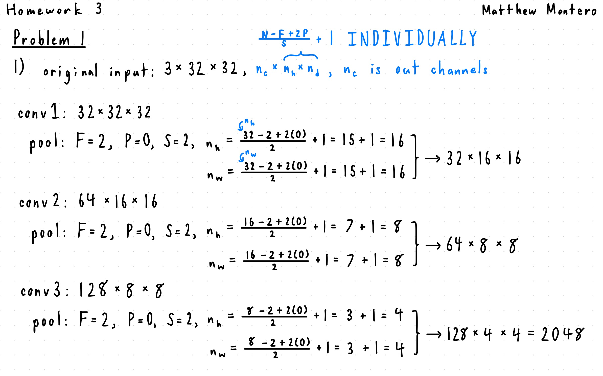
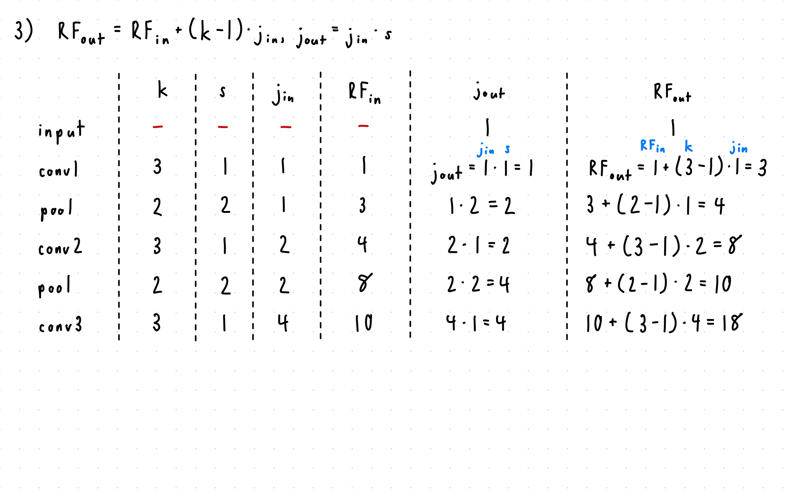

import glob
import os
import csv
import time
import pandas as pd
import numpy as np
import matplotlib.pyplot as plt
import torch
import torch.nn as nn
import torch.optim as optim
import torch.nn.functional as F
from PIL import Image
from torch.utils.data import Dataset, DataLoader, Subset, ConcatDataset
from torchvision import datasets, transforms
from sklearn.model_selection import train_test_split
from sklearn.metrics import f1_score
from transformers import AutoTokenizer, DistilBertForSequenceClassification
Problem 1: Window Type Classification (CNN)¶
# A simple CNN model
class SimpleCNN(nn.Module):
def __init__(self, num_classes):
super(SimpleCNN, self).__init__()
self.conv1 = nn.Conv2d(3, 32, kernel_size=3, stride=1, padding=1)
self.conv2 = nn.Conv2d(32, 64, kernel_size=3, stride=1, padding=1)
self.conv3 = nn.Conv2d(64, 128, kernel_size=3, stride=1, padding=1)
# BEGIN YOUR CODE HERE (~1 line)
# Task 1 asks you to compute this input dimension BY HAND (channels
# x height x width of conv3's pooled output, flattened) -- it is
# deliberately not given to you here. Must match whatever you use in
# the x.view(...) call in forward() below.
self.fc1 = nn.Linear(2048, 512)
# END YOUR CODE HERE
self.fc2 = nn.Linear(512, num_classes)
self.pool = nn.MaxPool2d(2, 2)
def forward(self, x):
x = self.pool(torch.relu(self.conv1(x)))
x = self.pool(torch.relu(self.conv2(x)))
x = self.pool(torch.relu(self.conv3(x)))
# BEGIN YOUR CODE HERE (~1 line)
# Same flattened size as fc1's input dimension above.
x = x.view(-1, 2048)
# END YOUR CODE HERE
x = torch.relu(self.fc1(x))
x = self.fc2(x)
# x = torch.softmax(x, dim=1) <--- the bug for Task 2
return x
Task 1: Compute fc1's input dimension by hand¶
SimpleCNN above deliberately leaves fc1's input dimension (and the matching x.view(-1, ...) call) blank. Compute it yourself: starting from the $32\times32\times3$ input, work out the output shape (channels $\times$ height $\times$ width) after conv1, its pooling layer, conv2, its pooling layer, conv3, and its pooling layer. Fill in the table below, then use the flattened size to fill in the two blanks in SimpleCNN above.
Task 1 answer¶
Fill in the shape after each layer, then compute the final flattened size. Double-click this cell to edit.
| layer | channels | height | width |
|---|---|---|---|
| input | 3 | 32 | 32 |
| conv1 | 32 | 32 | 32 |
| pool | 32 | 16 | 16 |
| conv2 | 64 | 16 | 16 |
| pool | 64 | 8 | 8 |
| conv3 | 128 | 8 | 8 |
| pool | 128 | 4 | 4 |
Flattened size (channels $\times$ height $\times$ width) = (128 $\times$ 4 $\times$ 4) = 2048

# Sanity check: fc1's shape doesn't depend on num_classes, so instantiate
# SimpleCNN with any placeholder value here and print its architecture --
# confirm the printed Linear(in_features=..., out_features=512) matches
# the flattened size you computed above.
print(SimpleCNN(num_classes=1))
SimpleCNN( (conv1): Conv2d(3, 32, kernel_size=(3, 3), stride=(1, 1), padding=(1, 1)) (conv2): Conv2d(32, 64, kernel_size=(3, 3), stride=(1, 1), padding=(1, 1)) (conv3): Conv2d(64, 128, kernel_size=(3, 3), stride=(1, 1), padding=(1, 1)) (fc1): Linear(in_features=2048, out_features=512, bias=True) (fc2): Linear(in_features=512, out_features=1, bias=True) (pool): MaxPool2d(kernel_size=2, stride=2, padding=0, dilation=1, ceil_mode=False) )
# augmentation method can be added in training
# keep validation clean
train_transform = transforms.Compose([
transforms.Resize((32, 32)),
transforms.ToTensor(),
transforms.Normalize((0.5, 0.5, 0.5), (0.5, 0.5, 0.5))
])
val_transform = transforms.Compose([
transforms.Resize((32, 32)),
transforms.ToTensor(),
transforms.Normalize((0.5, 0.5, 0.5), (0.5, 0.5, 0.5))
])
dataset_dir = "data/train_set"
full_train_dataset = datasets.ImageFolder(root=dataset_dir, transform=train_transform)
full_val_dataset = datasets.ImageFolder(root=dataset_dir, transform=val_transform) # same images, clean (no-augmentation) transform
# BEGIN YOUR CODE HERE (~4-8 lines)
# windows_test_set.zip ships unlabeled (see Problem 1's "About the test
# set" note) -- this train/val split is the ONLY way to get an accuracy
# number before final grading. Split the indices of full_train_dataset
# into disjoint train_idx/val_idx, stratified by class (each class
# should be represented proportionally in both splits). Hint: use
# full_train_dataset.targets, e.g. with
# sklearn.model_selection.train_test_split(..., stratify=...). A common
# split is 80% train / 20% val.
indices = list(range(len(full_train_dataset)))
train_idx, val_idx = train_test_split(indices, test_size=0.2, stratify=full_train_dataset.targets, random_state=42)
# END YOUR CODE HERE
train_dataset = Subset(full_train_dataset, train_idx)
val_dataset = Subset(full_val_dataset, val_idx)
train_loader = DataLoader(train_dataset, batch_size=64, shuffle=True)
val_loader = DataLoader(val_dataset, batch_size=1000, shuffle=False)
Figure out the number of classes¶
Don't hardcode the number of classes anywhere below -- read it off of train_dataset itself.
# BEGIN YOUR CODE HERE (~1-2 lines)
# Figure out the number of classes directly from full_train_dataset (an
# ImageFolder) -- don't hardcode it. Hint: check what attributes an
# ImageFolder dataset exposes for its classes.
num_classes = len(full_train_dataset.classes)
# END YOUR CODE HERE
# Also load the human-readable class NAMES from the same folder
# structure (ImageFolder assigns each class an index based on its
# folder name, sorted alphabetically) -- useful later for labeling
# figures (e.g. Task 6's CAM overlays) instead of showing a raw index.
class_names = full_train_dataset.classes # class_names[i] is the name for label i
print(f'Number of classes: {num_classes}')
print(f'Class names: {class_names}')
model = SimpleCNN(num_classes)
print(model)
Number of classes: 5 Class names: ['Awning', 'Bay', 'Fixed', 'H_Sliding', 'Hung'] SimpleCNN( (conv1): Conv2d(3, 32, kernel_size=(3, 3), stride=(1, 1), padding=(1, 1)) (conv2): Conv2d(32, 64, kernel_size=(3, 3), stride=(1, 1), padding=(1, 1)) (conv3): Conv2d(64, 128, kernel_size=(3, 3), stride=(1, 1), padding=(1, 1)) (fc1): Linear(in_features=2048, out_features=512, bias=True) (fc2): Linear(in_features=512, out_features=5, bias=True) (pool): MaxPool2d(kernel_size=2, stride=2, padding=0, dilation=1, ceil_mode=False) )
Task 2: Fix the bug and train the baseline¶
SimpleCNN has a bug involving how its output interacts with nn.CrossEntropyLoss() (used as the criterion below). Check the PyTorch documentation for what nn.CrossEntropyLoss expects as input, find and fix the bug in SimpleCNN.forward above, then run the cells below to train and evaluate.
criterion = nn.CrossEntropyLoss()
optimizer = optim.Adam(model.parameters(), lr=0.001)
# Explanation: The bug was the final line in the the foward function before the return statement,
# i.e., x = torch.softmax(x, dim=1). This is because nn.CrossEntropyLoss() requires raw logits;
# the last line was incorrect and can lead to the wrong loss calculation.
def train(model, train_loader, criterion, optimizer, num_epochs=5):
model.train()
for epoch in range(num_epochs):
running_loss = 0.0
for inputs, labels in train_loader:
optimizer.zero_grad()
outputs = model(inputs)
loss = criterion(outputs, labels)
loss.backward()
optimizer.step()
running_loss += loss.item()
# you may consider to
# save training log
# save model checkpoints
print(f"Epoch {epoch + 1}, Loss: {running_loss / len(train_loader)}")
train(model, train_loader, criterion, optimizer)
# Output:
# Epoch 1, Loss: 1.4930417944084515
# Epoch 2, Loss: 1.426962440664118
# Epoch 3, Loss: 1.285290089520541
# Epoch 4, Loss: 1.1279964650219136
# Epoch 5, Loss: 1.0264570252461866
Epoch 1, Loss: 1.4991592195901005 Epoch 2, Loss: 1.432704521851106 Epoch 3, Loss: 1.3360876142978668 Epoch 4, Loss: 1.194062884558331 Epoch 5, Loss: 1.0988046486269345
def evaluate(model, val_loader):
model.eval()
correct = 0
total = 0
with torch.no_grad():
for inputs, labels in val_loader:
outputs = model(inputs)
_, predicted = torch.max(outputs, 1)
total += labels.size(0)
correct += (predicted == labels).sum().item()
print(f'Accuracy: {100 * correct / total}%')
evaluate(model, val_loader)
Accuracy: 53.191489361702125%
Tasks 3 & 4: Receptive field of conv3's own output¶
Task 3 (compute by hand, no code needed) asks you to predict the receptive field of a unit in conv3's own output feature map (right after conv3's ReLU, but before its pooling layer), with respect to the $32\times32$ input.
Task 4 (below) asks you to verify this empirically: backprop a single unit's activation to the input image and see which pixels actually influenced it.
Task 3 answer¶
Fill in the table below, one row per layer (conv1, pool, conv2, pool, conv3, in order -- note conv3's own pooling layer is NOT part of this table, since we want the receptive field of conv3's output before it's pooled), then state your final conclusion underneath. Double-click this cell to edit.
| layer | $k$ | $s$ | $j_{\text{in}}$ | $RF_{\text{in}}$ | $j_{\text{out}}$ | $RF_{\text{out}}$ |
|---|---|---|---|---|---|---|
| conv1 | 3 | 1 | 1 | 1 | 1 | 3 |
| pool | 2 | 2 | 1 | 3 | 2 | 4 |
| conv2 | 3 | 1 | 2 | 4 | 2 | 8 |
| pool | 2 | 2 | 2 | 8 | 4 | 10 |
| conv3 | 3 | 1 | 4 | 10 | 4 | 18 |
Conclusion: does the final receptive field cover the full $32\times32$ input? ... Answer: No, the final receptive field does not cover the entire $32\times32$ input because a single conv3 unit only covers an $18\times18$ region of the input.

# ===== Task 4: verify the receptive field empirically =====
# Pick ONE image, and ONE unit in conv3's OWN output feature map (i.e.,
# right after conv3's ReLU, but BEFORE conv3's pooling layer). Backprop
# that unit's activation to the input image, then look at which input
# pixels ended up with a nonzero gradient.
model.eval()
# grab a single image (batch size 1); we need requires_grad_ so that
# autograd tracks a gradient all the way back to the input pixels
image, label = val_dataset[0]
image = image.unsqueeze(0)
image.requires_grad_(True)
# BEGIN YOUR CODE HERE (~6-10 lines)
# 1. Run `image` through conv1 -> relu -> pool -> conv2 -> relu -> pool
# -> conv3 -> relu (i.e., everything in SimpleCNN.forward up to and
# including conv3's own ReLU, but NOT conv3's pooling layer, and NOT
# the flatten + fc1 + fc2 head). You can reuse model.conv1/
# model.conv2/model.conv3/model.pool directly. Call the resulting
# feature map `fmap` -- it should have shape (1, 128, 8, 8).
x_conv1_relu_pool = model.pool(torch.relu(model.conv1(image)))
x_conv2_relu_pool = model.pool(torch.relu(model.conv2(x_conv1_relu_pool)))
fmap = torch.relu(model.conv3(x_conv2_relu_pool))
print(fmap.shape)
# 2. Pick one unit, e.g. fmap[0, c, h, w] for some (c, h, w) of your
# choice (try c=1 and the center of the 8x8 grid first -- some
# channel/location combinations sit at a dead ReLU for this image,
# i.e. the activation is exactly 0, which blocks the gradient; if
# that happens to you, try a different c).
h_choice = 4
w_choice = 4
for channel in range(fmap.shape[1]):
if fmap[0, channel, h_choice, w_choice].item() != 0:
c_choice = channel
break
unit = fmap[0, c_choice, h_choice, w_choice]
print(unit)
print("c_choice:", c_choice, "h_choice:", h_choice, "w_choice:", w_choice)
# 3. Call .backward() on that single scalar unit (NOT on a loss!).
unit.backward()
# 4. Read off the gradient that ended up in `image.grad` -- it has the
# same shape as `image`, (1, 3, 32, 32). Find which pixels have a
# nonzero gradient, e.g.:
# nonzero_mask = image.grad.abs().sum(dim=1).squeeze(0) > 1e-8
nonzero_mask = image.grad.abs().sum(dim=1).squeeze(0) > 1e-8
# END YOUR CODE HERE
# 5. Report the bounding box (min/max row, min/max col) of the nonzero
# region below, and compare its size to your Task 3 answer.
rows = nonzero_mask.any(dim=1).nonzero().flatten()
cols = nonzero_mask.any(dim=0).nonzero().flatten()
if rows.numel() > 0 and cols.numel() > 0:
print(f'Nonzero-gradient region: rows [{rows.min().item()}, {rows.max().item()}], '
f'cols [{cols.min().item()}, {cols.max().item()}] '
f'-> size {rows.max().item()-rows.min().item()+1} x {cols.max().item()-cols.min().item()+1}')
else:
print('No nonzero-gradient pixels found -- this usually means the unit you picked was a '
'dead ReLU (exactly 0) for this image, which blocks the gradient. Try a different '
'channel c (or a different spatial location) and re-run this cell.')
# Output: Nonzero-gradient region: rows [9, 26], cols [9, 26] -> size 18 x 18
# Answer: This unit's receptive field has the same 18×18 region as the earlier calculated receptive field.
torch.Size([1, 128, 8, 8]) tensor(0.0393, grad_fn=<SelectBackward0>) c_choice: 5 h_choice: 4 w_choice: 4 Nonzero-gradient region: rows [9, 26], cols [9, 26] -> size 18 x 18
Task 5: Swap the head for Global Average Pooling¶
Replace the flatten + fc1 + fc2 head with Global Average Pooling followed by a single linear layer straight to num_classes logits.
# ===== Task 5: Global Average Pooling head =====
class SimpleCNN_GAP(nn.Module):
def __init__(self, num_classes):
super(SimpleCNN_GAP, self).__init__()
self.conv1 = nn.Conv2d(3, 32, kernel_size=3, stride=1, padding=1)
self.conv2 = nn.Conv2d(32, 64, kernel_size=3, stride=1, padding=1)
self.conv3 = nn.Conv2d(64, 128, kernel_size=3, stride=1, padding=1)
self.pool = nn.MaxPool2d(2, 2)
# BEGIN YOUR CODE HERE (~2 lines)
# Add a Global Average Pooling layer (hint: nn.AdaptiveAvgPool2d
# with output_size=1 does this in one line) and a SINGLE linear
# layer mapping from 128 channels directly to num_classes.
self.gap = nn.AdaptiveAvgPool2d(output_size=1)
self.fc = nn.Linear(128, num_classes)
# END YOUR CODE HERE
def forward(self, x):
x = self.pool(torch.relu(self.conv1(x)))
x = self.pool(torch.relu(self.conv2(x)))
fmap = self.pool(torch.relu(self.conv3(x))) # shape (B, 128, 4, 4)
# BEGIN YOUR CODE HERE (~3 lines)
# Apply self.gap to `fmap`, reshape/squeeze the result to shape
# (B, 128), then apply self.fc to get the final logits.
x = self.gap(fmap)
x = x.view(x.size(0), -1)
logits = self.fc(x)
# END YOUR CODE HERE
return logits
gap_model = SimpleCNN_GAP(num_classes)
print(gap_model)
# Report parameter counts for both models, e.g.:
n_params_orig = sum(p.numel() for p in model.parameters())
n_params_gap = sum(p.numel() for p in gap_model.parameters())
print(f'SimpleCNN params: {n_params_orig}, SimpleCNN_GAP params: {n_params_gap}')
# Output: SimpleCNN params: 1144901, SimpleCNN_GAP params: 93893
# Now retrain: reuse train()/evaluate() from earlier, e.g.
gap_optimizer = optim.Adam(gap_model.parameters(), lr=0.001)
train(gap_model, train_loader, criterion, gap_optimizer)
evaluate(gap_model, val_loader)
# Output:
# Epoch 1, Loss: 1.4908693703738125
# Epoch 2, Loss: 1.4645946323871613
# Epoch 3, Loss: 1.435982584953308
# Epoch 4, Loss: 1.396104167808186
# Epoch 5, Loss: 1.3680123063650997
# Accuracy: 40.42553191489362%|
SimpleCNN_GAP( (conv1): Conv2d(3, 32, kernel_size=(3, 3), stride=(1, 1), padding=(1, 1)) (conv2): Conv2d(32, 64, kernel_size=(3, 3), stride=(1, 1), padding=(1, 1)) (conv3): Conv2d(64, 128, kernel_size=(3, 3), stride=(1, 1), padding=(1, 1)) (pool): MaxPool2d(kernel_size=2, stride=2, padding=0, dilation=1, ceil_mode=False) (gap): AdaptiveAvgPool2d(output_size=1) (fc): Linear(in_features=128, out_features=5, bias=True) ) SimpleCNN params: 1144901, SimpleCNN_GAP params: 93893 Epoch 1, Loss: 1.5071142993190072 Epoch 2, Loss: 1.4832777678966522 Epoch 3, Loss: 1.4512202089483088 Epoch 4, Loss: 1.4192377166314558 Epoch 5, Loss: 1.4007683829827742 Accuracy: 38.58156028368794%
Task 6: Class Activation Maps¶
Using your trained gap_model from Task 5, compute and visualize a Class Activation Map (CAM) for 3 correctly-classified test images.
# ===== Task 6: Class Activation Maps =====
def compute_cam(gap_model, image, predicted_class):
"""image: a single (1, 3, 32, 32) tensor. Returns a (4, 4) CAM (as a tensor)."""
gap_model.eval()
with torch.no_grad():
image = image.unsqueeze(0) # add batch dimension
# BEGIN YOUR CODE HERE (~6-10 lines)
# 1. Run `image` through conv1/pool, conv2/pool, conv3/pool
# (same three lines as in gap_model.forward) to get the last
# conv feature map `fmap`, shape (1, 128, 4, 4).
x_conv1_relu_pool = gap_model.pool(torch.relu(gap_model.conv1(image)))
x_conv2_relu_pool = gap_model.pool(torch.relu(gap_model.conv2(x_conv1_relu_pool)))
fmap = gap_model.pool(torch.relu(gap_model.conv3(x_conv2_relu_pool)))
print(fmap.shape)
# 2. Get the weight vector for `predicted_class` from the GAP
# model's final linear layer: gap_model.fc.weight has shape
# (num_classes, 128); gap_model.fc.weight[predicted_class]
# has shape (128,).
weight = gap_model.fc.weight[predicted_class]
# 3. Compute the CAM as a weighted sum, over the 128 channels,
# of `fmap` using those weights -- i.e., for each of the 16
# (4x4) spatial positions: sum_k weight[k] * fmap[0, k, :, :].
# (Hint: torch.einsum('k,khw->hw', weight, fmap[0]) does this
# in one line; a broadcasted multiply + sum over dim 0 also
# works.)
cam = torch.einsum("k,khw->hw", weight, fmap[0])
# END YOUR CODE HERE
return cam # shape (4, 4)
def show_cam_overlay(image_tensor, cam, predicted_class, ax=None):
"""Upsamples `cam` to the image's resolution and overlays it as a heatmap.
Uses `class_names` (loaded earlier from the dataset's folder names) to
title the figure with a human-readable label instead of a raw index."""
if ax is None:
_, ax = plt.subplots(figsize=(1.5, 1.5))
# BEGIN YOUR CODE HERE (~5-8 lines)
# 1. Upsample `cam` (4x4) to (32, 32), e.g.:
cam_up = F.interpolate(cam.view(1, 1, 4, 4), size=(32, 32),
mode='bilinear', align_corners=False)
cam_up = cam_up.squeeze()
# 2. Normalize cam_up to [0, 1] (e.g., (cam_up - cam_up.min()) /
# (cam_up.max() - cam_up.min() + 1e-8)) so it displays as a
# sensible heatmap regardless of the raw CAM value range.
cam_up = (cam_up - cam_up.min()) / (cam_up.max() - cam_up.min() + 1e-8)
# 3. Un-normalize `image_tensor` back to a displayable [0, 1] image
# (recall we normalized with mean=std=0.5, so displayed_img =
# image_tensor * 0.5 + 0.5)
displayed_img = image_tensor * 0.5 + 0.5
ax.imshow(displayed_img.permute(1, 2, 0).numpy())
ax.imshow(cam_up.detach().numpy(), alpha=0.5, cmap='jet')
# END YOUR CODE HERE
ax.set_title(class_names[predicted_class])
ax.axis('off')
# Pick 3+ correctly-classified test images (ideally from different
# predicted class), call compute_cam + show_cam_overlay(..., predicted_class)
# on each, and include the resulting figures in your submission.
selected = 0
selected_classes = set()
for inputs, labels in val_loader:
# BEGIN YOUR CODE HERE
outputs = gap_model(inputs)
_, predicted = torch.max(outputs, 1)
# END YOUR CODE HERE
for i in range(len(labels)):
# BEGIN YOUR CODE HERE (~6 lines)
predicted_class = predicted[i].item()
if selected < 3 and predicted_class not in selected_classes and predicted_class == labels[i]:
image = inputs[i]
cam = compute_cam(gap_model, image, predicted_class)
fig, axes = plt.subplots(1, 2, figsize=(6, 3))
displayed_img = image * 0.5 + 0.5
axes[0].imshow(displayed_img.permute(1, 2, 0).numpy())
axes[0].set_title("Original")
axes[0].axis("off")
show_cam_overlay(image, cam, predicted_class, ax=axes[1])
plt.show()
selected_classes.add(predicted_class)
selected += 1
# END YOUR CODE HERE
torch.Size([1, 128, 4, 4])
![No description has been provided for this image]()
torch.Size([1, 128, 4, 4])
![No description has been provided for this image]()
torch.Size([1, 128, 4, 4])
![No description has been provided for this image]()
# Save your trained GAP model's weights (e.g. to include in your
# submission, or to reload later without retraining).
torch.save(gap_model.state_dict(), 'gap_model.pth')
print('Saved gap_model weights to gap_model.pth')
Saved gap_model weights to gap_model.pth
Task 7 (BONUS): Push past 60% accuracy¶
Using any combination of architecture changes, hyperparameter tuning, or changes to the training/optimization procedure, try to get your best model's test accuracy -- as computed by the TA from your submitted predictions.csv -- to at least 60%. A few directions to consider (you don't need all of them):
- Architecture: more conv layers or channels,
nn.BatchNorm2d,nn.Dropout, or building on yourSimpleCNN_GAPhead from Task 5. - Hyperparameters: learning rate, batch size, number of epochs, optimizer (e.g.
AdamW,SGDwith momentum), weight decay. - Training/optimization: data augmentation in
train_transform(e.g.RandomHorizontalFlip,RandomRotation,ColorJitter), a learning-rate scheduler, or a class-weighted loss (recall the class imbalance noted at the top of this problem).
# ===== Task 7 (BONUS): push past 60% accuracy =====
# Build your improved model/optimizer below, train it, and evaluate it
# on val_loader. Reuse train()/evaluate() from Task 2, or write your own
# training loop if you're using a scheduler or other custom logic.
class BonusCNN(nn.Module):
def __init__(self, num_classes):
super(BonusCNN, self).__init__()
self.conv1 = nn.Conv2d(3, 32, kernel_size=3, stride=1, padding=1)
self.conv2 = nn.Conv2d(32, 64, kernel_size=3, stride=1, padding=1)
self.conv3 = nn.Conv2d(64, 128, kernel_size=3, stride=1, padding=1)
self.conv4 = nn.Conv2d(128, 256, kernel_size=3, stride=1, padding=1)
self.dropout = nn.Dropout(p=0.2)
# self.batchnorm = nn.BatchNorm2d(1024)
self.pool = nn.MaxPool2d(2, 2)
self.fc1 = nn.Linear(1024, 512) # first argument: 256 x 2 x 2
self.fc2 = nn.Linear(512, 256)
self.fc3 = nn.Linear(256, num_classes)
def forward(self, x):
x = self.pool(torch.relu(self.conv1(x)))
x = self.pool(torch.relu(self.conv2(x)))
x = self.pool(torch.relu(self.conv3(x)))
x = self.pool(torch.relu(self.conv4(x)))
x = torch.flatten(x, start_dim=1)
x = self.dropout(torch.relu(self.fc1(x)))
x = self.dropout(torch.relu(self.fc2(x)))
x = self.fc3(x)
return x # logits
# BEGIN YOUR CODE HERE
criterion = nn.CrossEntropyLoss()
hyper_lrs = [1e-3] # I tried 0.01 and 0.0001 but both did bad
hyper_epochs = [5, 10, 15, 20]
torch.manual_seed(42)
best_configuration = {"learning_rate": hyper_lrs[0],
"epochs": hyper_epochs[0]}
best_accuracy = 0.0
for current_lr in hyper_lrs:
for epochs in hyper_epochs:
current_config = {"learning_rate": current_lr,
"epochs": epochs}
print(f'Current learning rate: {current_config["learning_rate"]}, Current epochs: {current_config["epochs"]}')
current_bonus_model = BonusCNN(num_classes)
current_bonus_optimizer = optim.Adam(current_bonus_model.parameters(), lr=current_lr)
train(current_bonus_model, train_loader, criterion, current_bonus_optimizer, num_epochs=epochs)
current_bonus_model.eval()
correct = 0
total = 0
with torch.no_grad():
for inputs, labels in val_loader:
outputs = current_bonus_model(inputs)
_, predicted = torch.max(outputs, 1)
total += labels.size(0)
correct += (predicted == labels).sum().item()
current_accuracy = correct / total
print(f'Accuracy: {100 * current_accuracy}%')
if current_accuracy > best_accuracy:
best_configuration = current_config
best_accuracy = current_accuracy
best_bonus_model = current_bonus_model
# END YOUR CODE HERE
print(f'Best accuracy: {100 * best_accuracy}%, Best learning rate: {best_configuration["learning_rate"]}, Best epochs: {best_configuration["epochs"]}')
evaluate(best_bonus_model, val_loader)
# END YOUR CODE HERE
Current learning rate: 0.001, Current epochs: 5 Epoch 1, Loss: 1.5032425712455402 Epoch 2, Loss: 1.4770393696698276 Epoch 3, Loss: 1.3809578147801487 Epoch 4, Loss: 1.247799200090495 Epoch 5, Loss: 1.1796227991580963 Accuracy: 47.65957446808511% Current learning rate: 0.001, Current epochs: 10 Epoch 1, Loss: 1.5389171920039437 Epoch 2, Loss: 1.4918429986997084 Epoch 3, Loss: 1.4789754694158381 Epoch 4, Loss: 1.426443018696525 Epoch 5, Loss: 1.2778801240704276 Epoch 6, Loss: 1.2065965628082103 Epoch 7, Loss: 1.151734465902502 Epoch 8, Loss: 1.0938780172304674 Epoch 9, Loss: 0.9888574467463926 Epoch 10, Loss: 0.8963685116984628 Accuracy: 55.319148936170215% Current learning rate: 0.001, Current epochs: 15 Epoch 1, Loss: 1.5119323622096668 Epoch 2, Loss: 1.483118853785775 Epoch 3, Loss: 1.3912023251706904 Epoch 4, Loss: 1.2628502737392078 Epoch 5, Loss: 1.1623597619208423 Epoch 6, Loss: 1.0694348432800986 Epoch 7, Loss: 1.0060936497016386 Epoch 8, Loss: 0.9221222685141997 Epoch 9, Loss: 0.8462889627976851 Epoch 10, Loss: 0.7351130958307873 Epoch 11, Loss: 0.5880117633125999 Epoch 12, Loss: 0.4914751479571516 Epoch 13, Loss: 0.43537856232036243 Epoch 14, Loss: 0.3454625992612405 Epoch 15, Loss: 0.28434518521482294 Accuracy: 58.29787234042553% Current learning rate: 0.001, Current epochs: 20 Epoch 1, Loss: 1.5162532817233692 Epoch 2, Loss: 1.4773347133939916 Epoch 3, Loss: 1.4197832481427626 Epoch 4, Loss: 1.3320045687935569 Epoch 5, Loss: 1.2052191766825588 Epoch 6, Loss: 1.128988112915646 Epoch 7, Loss: 1.0251661024310372 Epoch 8, Loss: 0.9126596816561439 Epoch 9, Loss: 0.7895033129236915 Epoch 10, Loss: 0.7118230814283545 Epoch 11, Loss: 0.6221720305356112 Epoch 12, Loss: 0.527017006142573 Epoch 13, Loss: 0.41578146612102335 Epoch 14, Loss: 0.32649433274160733 Epoch 15, Loss: 0.2446300092745911 Epoch 16, Loss: 0.18814798088913615 Epoch 17, Loss: 0.1674501643600789 Epoch 18, Loss: 0.1758362426507202 Epoch 19, Loss: 0.12701412789862265 Epoch 20, Loss: 0.10917657287791371 Accuracy: 57.446808510638306% Best accuracy: 58.29787234042553%, Best learning rate: 0.001, Best epochs: 15 Accuracy: 58.297872340425535%
Task 7 answer¶
Briefly describe what you changed and why (2-4 sentences). Double-click this cell to edit. I chose to add an extra convolution/pool layer built off the SimpleCNN architecture to increase the final receptive field. I think that increasing the RF would allow the incorporate more information with a larger region. Because there are more parameters to train, I want to ensure it doesn't overfit so I added dropout on the forward pass.
Submit predictions on the (unlabeled) test set¶
windows_test_set.zip ships without labels, so the cell below runs whichever of your trained models you consider best (swap in model, gap_model, or bonus_model as appropriate) over every image in test_set/ and writes predictions.csv. Submit this file alongside your PDF -- the TA uses it to compute your real test accuracy, including whether you've met the bonus task's 60% threshold.
class UnlabeledImageDataset(Dataset):
"""Loads every image file under `root` (searched recursively), with no
label -- used for windows_test_set.zip, which ships unlabeled."""
def __init__(self, root, transform):
exts = ('*.png', '*.jpg', '*.jpeg', '*.bmp', '*.gif')
self.paths = sorted(
p for ext in exts
for p in glob.glob(os.path.join(root, '**', ext), recursive=True)
)
self.transform = transform
def __len__(self):
return len(self.paths)
def __getitem__(self, idx):
path = self.paths[idx]
image = Image.open(path).convert('RGB')
return self.transform(image), os.path.basename(path)
test_dataset = UnlabeledImageDataset('data/test_set', val_transform)
test_loader = DataLoader(test_dataset, batch_size=64, shuffle=False)
# Swap this for whichever of your trained models has the best validation
# accuracy (e.g. gap_model or bonus_model instead of model).
best_model = best_bonus_model # Using bonus model from bonus question
best_model.eval()
rows = []
with torch.no_grad():
for images, filenames in test_loader:
outputs = best_model(images)
_, predicted = torch.max(outputs, 1)
for fname, pred in zip(filenames, predicted.tolist()):
rows.append((fname, class_names[pred]))
with open('predictions.csv', 'w', newline='') as f:
writer = csv.writer(f)
writer.writerow(['filename', 'predicted_label'])
writer.writerows(rows)
print(f'Wrote {len(rows)} predictions to predictions.csv')
Wrote 496 predictions to predictions.csv
Problem 2: Comparing Vanilla RNN with Variants in Sequence Modeling¶
Load the data¶
X_train/X_test are lists of variable-length sequences (each a (seq_len, 10) tensor); y_train/y_test are the corresponding scalar targets. Make sure X_train.npy, y_train.npy, X_test.npy, and y_test.npy (from homework4_question2_data.zip) are in the same directory as this notebook before running the cell below.
dataset_dir = 'data/sequential_data'
# load training and test data
def loadData():
X_train = np.load(os.path.join(dataset_dir, 'X_train.npy'), allow_pickle=True)
y_train = np.load(os.path.join(dataset_dir, 'y_train.npy'), allow_pickle=True)
X_test = np.load(os.path.join(dataset_dir, 'X_test.npy'), allow_pickle=True)
y_test = np.load(os.path.join(dataset_dir, 'y_test.npy'), allow_pickle=True)
X_train = [torch.Tensor(x) for x in X_train] # List of Tensors (SEQ_LEN[i], INPUT_DIM) i=0..NUM_SAMPLES-1
X_test = [torch.Tensor(x) for x in X_test] # List of Tensors (SEQ_LEN[i], INPUT_DIM)
y_train = torch.Tensor(y_train) # (NUM_SAMPLES, 1)
y_test = torch.Tensor(y_test) # (NUM_SAMPLES, 1)
return X_train, X_test, y_train, y_test
X_train, X_test, y_train, y_test = loadData()
device = y_train.device
Task 1 (4 points): Implement a Vanilla RNN¶
Implement a Vanilla RNN architecture by hand (weights are shared across time steps). You are not allowed to use an RNN layer implementation from any library (e.g. nn.RNN, nn.RNNCell) -- only basic layers like nn.Linear.
# Define a Vanilla RNN layer by hand
class RNNLayer(nn.Module):
def __init__(self, input_size, hidden_size):
super(RNNLayer, self).__init__()
self.input_size = input_size
self.hidden_size = hidden_size
# BEGIN YOUR CODE HERE (~3 lines)
# Define the input-to-hidden weights (W_xh), hidden-to-hidden
# weights (W_hh), and the activation function applied to their
# combined output (a Vanilla RNN uses tanh).
self.W_xh = nn.Parameter(torch.randn(self.input_size, self.hidden_size) * 0.01)
self.W_hh = nn.Parameter(torch.randn(self.hidden_size, self.hidden_size) * 0.01)
self.activation = nn.Tanh()
# END YOUR CODE HERE
def forward(self, x, hidden):
# BEGIN YOUR CODE HERE (~1 line)
# Combine the current input x and the previous hidden state,
# then apply the activation function.
hidden = self.activation(torch.matmul(x, self.W_xh) + \
torch.matmul(hidden, self.W_hh))
# END YOUR CODE HERE
return hidden
# Define a sequence prediction model using the Vanilla RNN
class SequenceModel(nn.Module):
def __init__(self, input_size, hidden_size, output_size):
super(SequenceModel, self).__init__()
self.hidden_size = hidden_size
# BEGIN YOUR CODE HERE (~2 lines)
self.rnn = RNNLayer(input_size, self.hidden_size)
self.linear = nn.Linear(self.hidden_size, output_size)
# END YOUR CODE HERE
def forward(self, input_seq, seq_lengths):
# BEGIN YOUR CODE HERE (~2 lines)
# input_seq is a list of (seq_len_b, input_size) tensors, one per
# sample in the batch (lengths may differ across samples).
batch_size = len(input_seq)
last_hidden = torch.zeros(batch_size, self.hidden_size).to(device)
# END YOUR CODE HERE
for b in range(batch_size):
hidden = torch.zeros(self.hidden_size).to(device)
# BEGIN YOUR CODE HERE (~3 lines)
# Run the RNN layer forward, one timestep at a time, over
# this sample's full sequence (its own seq_lengths[b] steps),
# updating `hidden` each step.
seq_length = seq_lengths[b]
for t in range(seq_length):
hidden = self.rnn(input_seq[b][t], hidden)
# END YOUR CODE HERE
# Store the last hidden state in the output tensor
last_hidden[b] = hidden
output = self.linear(last_hidden)
return output
Tasks 2 & 3 (4 points each): Fixed-length variants¶
SequenceModelFixedLen below is shared by both variants -- it is instantiated with seq_len set to the dataset's shortest sequence length for Task 2 (truncated), and to the dataset's longest sequence length for Task 3 (padded). Unlike SequenceModel above, each timestep gets its own, non-shared RNNLayer (self.rnn_layers[t]), so this model does not tie weights across time.
The constructor parameter seq_len is what caps how many timesteps of each sequence actually get processed: in forward, each sample only runs for min(self.seq_len, seq_lengths[b]) steps, i.e. its own length, but never more than seq_len. Setting seq_len to the shortest training-sequence length (Task 2) therefore truncates every longer sequence down to that length. Setting seq_len to the longest sequence length (Task 3) never truncates anything -- every sample simply runs its own true length, which is exactly what "ignoring the padding" amounts to here (a shorter sample never reaches, let alone runs, the extra padded timesteps).
# Define a sequence prediction model for fixed length sequences, BUT NO SHARED WEIGHTS
class SequenceModelFixedLen(nn.Module):
def __init__(self, input_size, hidden_size, output_size, seq_len):
super(SequenceModelFixedLen, self).__init__()
self.hidden_size = hidden_size
self.seq_len = seq_len
# BEGIN YOUR CODE HERE (~2 lines)
# Note: rnn_layers is wrapped in nn.ModuleList (not a plain
# Python list) -- nn.Module only auto-registers submodules held
# in its own attributes/containers like nn.ModuleList, so a bare
# list here would make every one of these RNNLayers invisible to
# model.parameters(), and the optimizer would silently never
# update them.
self.rnn_layers = nn.ModuleList([RNNLayer(input_size, self.hidden_size) for _ in range(self.seq_len)])
self.linear = nn.Linear(self.hidden_size, output_size)
# END YOUR CODE HERE
def forward(self, input_seq, seq_lengths):
batch_size = len(input_seq)
last_hidden = torch.zeros(batch_size, self.hidden_size).to(device)
for b in range(batch_size):
hidden = torch.zeros(self.hidden_size).to(device)
# BEGIN YOUR CODE HERE (~3 lines)
# For Task 2 (truncated), self.seq_len is the shortest
# sequence length, so every sample runs for exactly
# self.seq_len steps. For Task 3 (padded), self.seq_len is
# the longest sequence length; a sample shorter than that
# should stop at its OWN true length (min(...) below handles
# both cases -- this is your "ignore the padding" mechanism,
# since a shorter sample simply never runs its remaining,
# nonexistent timesteps).
seq_length = min(self.seq_len, seq_lengths[b])
for t in range(seq_length):
hidden = self.rnn_layers[t](input_seq[b][t], hidden)
# END YOUR CODE HERE
# Store the last hidden state in the output tensor
last_hidden[b] = hidden
output = self.linear(last_hidden)
return output
Hyperparameters and training loop¶
# Define hyperparameters and other settings
input_size = 10 # Replace with the actual dimension of your input features
hidden_size = 64
output_size = 1
num_epochs = 10
learning_rate = 0.001
batch_size = 32
# Sequence lengths across the training set -- needed to pick seq_len for
# the Task 2 (shortest) and Task 3 (longest) SequenceModelFixedLen models.
seq_lengths = [seq.shape[0] for seq in X_train]
min_length = min(seq_lengths)
max_length = max(seq_lengths)
# Training loop
def train(model, num_epochs, lr, batch_size, X_train, y_train, seq_lengths):
criterion = nn.MSELoss()
optimizer = optim.Adam(model.parameters(), lr=lr)
# Task 4 asks you to "monitor and record the training ... loss
# curves" -- record the average loss per epoch here so you can plot
# it later (see the plotting cell under Task 4).
epoch_losses = []
for epoch in range(num_epochs):
running_loss = 0.0
num_batches = 0
for i in range(0, len(X_train), batch_size):
inputs = X_train[i:i + batch_size]
targets = y_train[i:i + batch_size]
lengths = seq_lengths[i:i + batch_size]
optimizer.zero_grad()
outputs = model(inputs, lengths)
loss = criterion(outputs, targets)
loss.backward()
optimizer.step()
running_loss += loss.item()
num_batches += 1
epoch_loss = running_loss / num_batches
epoch_losses.append(epoch_loss)
print(f'Epoch {epoch + 1}, Loss: {epoch_loss}')
return model, epoch_losses
torch.manual_seed(42)
<torch._C.Generator at 0x262cd1c4f90>
Task 4 (4 points): Train all three models, then predict before you evaluate¶
Train the Vanilla RNN, the truncated (shortest-length) model, and the padded (longest-length) model, each using MSE loss for a fixed number of epochs. Monitor and record the training (and validation, if you set aside a validation split) loss curves for each model. train(...) returns (model, epoch_losses) -- capture both.
Then, before looking at test-set performance, predict the ranking of the three models by overall test MSE (best to worst). Justify your prediction using the actual mechanics of the three architectures (shared weights vs. fixed-length truncation vs. fixed-length padding) -- not just intuition.
# BEGIN YOUR CODE HERE
# Initialize and train the Vanilla RNN (SequenceModel).
model_vanilla = SequenceModel(input_size, hidden_size, output_size)
model_vanilla, epoch_losses_vanilla = train(model=model_vanilla,
num_epochs=num_epochs,
lr=learning_rate,
batch_size=batch_size,
X_train=X_train,
y_train=y_train,
seq_lengths=seq_lengths)
# END YOUR CODE HERE
Epoch 1, Loss: 0.030444729924201965 Epoch 2, Loss: 0.020306206792593002 Epoch 3, Loss: 0.01408067937940359 Epoch 4, Loss: 0.009595737494528293 Epoch 5, Loss: 0.006353703830391169 Epoch 6, Loss: 0.004050506977364421 Epoch 7, Loss: 0.00251958541572094 Epoch 8, Loss: 0.0015532330004498363 Epoch 9, Loss: 0.0009520199988037347 Epoch 10, Loss: 0.0005869924940634519
# BEGIN YOUR CODE HERE
# Initialize and train the Sequential NN fixing #timesteps to the
# minimum sequence length (SequenceModelFixedLen with seq_len=min_length).
model_trunc = SequenceModelFixedLen(input_size, hidden_size,
output_size, min_length)
model_trunc, epoch_losses_trunc = train(model=model_trunc,
num_epochs=num_epochs,
lr=learning_rate,
batch_size=batch_size,
X_train=X_train,
y_train=y_train,
seq_lengths=seq_lengths)
# END YOUR CODE HERE
Epoch 1, Loss: 0.0343604888021946 Epoch 2, Loss: 0.02557221196591854 Epoch 3, Loss: 0.0203010094165802 Epoch 4, Loss: 0.016693551279604434 Epoch 5, Loss: 0.014183145947754383 Epoch 6, Loss: 0.012427430152893066 Epoch 7, Loss: 0.011279277205467224 Epoch 8, Loss: 0.010553570427000523 Epoch 9, Loss: 0.010119756888598204 Epoch 10, Loss: 0.009865902699530124
# BEGIN YOUR CODE HERE
# Initialize and train the Sequential NN fixing #timesteps to the
# maximum sequence length (SequenceModelFixedLen with seq_len=max_length).
# NOTE: it is OK to use torch.nn.utils.rnn.pad_sequence; make sure to
# set parameter batch_first correctly.
model_padded = SequenceModelFixedLen(input_size, hidden_size,
output_size, max_length)
model_padded, epoch_losses_padded = train(model=model_padded,
num_epochs=num_epochs,
lr=learning_rate,
batch_size=batch_size,
X_train=X_train,
y_train=y_train,
seq_lengths=seq_lengths)
# END YOUR CODE HERE
Epoch 1, Loss: 0.009133531842380763 Epoch 2, Loss: 0.002275962741114199 Epoch 3, Loss: 0.0011919817654415966 Epoch 4, Loss: 0.0007775315502658487 Epoch 5, Loss: 0.0005443460075184702 Epoch 6, Loss: 0.0003885076683945954 Epoch 7, Loss: 0.0003027613158337772 Epoch 8, Loss: 0.000281832943437621 Epoch 9, Loss: 0.00022109186043962838 Epoch 10, Loss: 0.0002013702876865864
plt.figure(figsize=(4, 3))
# BEGIN YOUR CODE HERE
# Plot the recorded per-epoch training (and validation) loss curves for
# all three models on the same axes, for comparison.
plt.plot(range(1, num_epochs + 1), epoch_losses_vanilla, label='Vanilla RNN')
plt.plot(range(1, num_epochs + 1), epoch_losses_trunc, label='Truncated SeqModel')
plt.plot(range(1, num_epochs + 1), epoch_losses_padded, label='Padded SeqModel')
plt.xlabel('Epoch')
plt.ylabel('Loss')
plt.title('Training Loss Curves')
plt.legend()
# END YOUR CODE HERE
<matplotlib.legend.Legend at 0x262f731fcb0>
![No description has been provided for this image]()
Task 4 answer¶
Your predictions and justification here. From best to worst:
- Vanilla: It uses the same weight transformation for each input at each time step. This reduces the number of learned parameters and allows the model to apply the same learned relationships across sequences of different lengths.
- Padded: Having independent weights for each timesteps for up to max_length introduces more parameters than the vanilla. Not only would training take longer, but more parameters can lend the model to be prone to overfitting and worse at generalization.
- Truncated: Unlike the other two, it throws away information from future timesteps by the shortest sequence. In turn, if there is relevant future information, the model would predict worse for long sequences, especially with independent weights for each timestep.
Task 5 (4 points): Reconcile and analyze¶
Evaluate all three trained models on the test set and report the overall test MSE for each. Compare the actual ranking to your Task 4 prediction. Where you were right, explain why using the models' mechanics; where you were surprised, propose a concrete explanation. Discuss the trade-offs between shared weights, truncation, and padding for modeling sequences of varying length.
# BEGIN YOUR CODE HERE
# 1. Evaluate each of the three trained models on the test set (X_test,
# y_test) using MSE. Compute FRESH sequence lengths from X_test
# itself (e.g. test_seq_lengths = [seq.shape[0] for seq in X_test])
# -- don't reuse the training set's seq_lengths variable, since it's
# still in scope but describes the wrong sequences/order entirely.
test_seq_lengths = [seq.shape[0] for seq in X_test]
criterion = nn.MSELoss()
model_vanilla.eval()
model_padded.eval()
model_trunc.eval()
with torch.no_grad():
predictions_vanilla = model_vanilla(X_test, test_seq_lengths)
mse_vanilla = criterion(predictions_vanilla, y_test)
predictions_padded = model_padded(X_test, test_seq_lengths)
mse_padded = criterion(predictions_padded, y_test)
predictions_trunc = model_trunc(X_test, test_seq_lengths)
mse_trunc = criterion(predictions_trunc, y_test)
mse_results = {
"Vanilla RNN": mse_vanilla.item(),
"Padded SeqModel": mse_padded.item(),
"Truncated SeqModel": mse_trunc.item()
}
# 2. Report the overall test MSE for each model, and the resulting
# ranking (best to worst).
sorted_mse = sorted(mse_results.items(), key=lambda x: x[1])
print("Ranking (best to worst):")
for model, mse in sorted_mse:
print(f"{model}: {mse}")
# END YOUR CODE HERE
Ranking (best to worst): Vanilla RNN: 0.0005668039084412158 Padded SeqModel: 0.0007158570224419236 Truncated SeqModel: 0.00910536665469408
Task 5 answer¶
My predictions were correct. Refer to explanations in my predicted. I wasn't surprised that the truncated model did the worst, but I was surprised by how much badly it did; it was by a higher order of magnitude. For working with some dataset of input sequences, an RNN is preferred.. Regarding tradeoffs, the truncated and padded models were as easy to implement than the vanilla RNN. Moreover, the RNN was simpler to implement, though it required some more intuition. For other tradeoffs, the vanilla RNN has a shared weight across timesteps so it can both predict better and have less parameters to train; the other two have more to train on per timestep. And while truncating reduces the params and increases training time, it throws away potentially important future information. For padding, it can generalize worse due to extra params.
Problem 3: Fine-tune a DistilBERT model¶
This starter code is organized so that all of the data engineering (downloading the dataset, splitting it, tokenizing it, wrapping it in Dataset/DataLoader objects) and the generic training/evaluation loop are already written for you and fully working -- you should not need to change any of that code. Cells marked (given) need no edits.
Your actual tasks (Tasks 1-7 plus the bonus) are about the modeling questions: what does freezing the backbone actually buy you, how do you tune a hyperparameter properly, and what is the model's attention actually doing. Each task below has a clearly marked # BEGIN YOUR CODE HERE / # END YOUR CODE HERE block -- that is the only place you need to write code for that task.
# If you are running this notebook on Google Colab, uncomment the two
# lines below to connect to your Google Drive (e.g. to save model
# checkpoints so they survive after your Colab runtime disconnects).
# Nothing else in this notebook requires Drive -- the dataset is fetched
# directly from a public URL below -- so this cell is optional.
# from google.colab import drive
# drive.mount('/content/drive/')
Setup (given)¶
if torch.cuda.is_available():
device = torch.device('cuda')
elif torch.backends.mps.is_available():
device = torch.device('mps') # Apple Silicon GPU
else:
device = torch.device('cpu')
print(f'Using device: {device}')
# On MPS, the fused/SDPA attention kernel doesn't support dropout and
# raises `NotImplementedError: scaled_dot_product_attention for MPS does
# not support dropout` the instant you call .backward() in training mode.
# ATTN_IMPL picks a numerically-equivalent fallback on MPS; pass
# `attn_implementation=ATTN_IMPL` to every DistilBertForSequenceClassification
# .from_pretrained(...) call you write below (Tasks 3, 4, 5, and the Bonus),
# not just the one already given here.
ATTN_IMPL = 'eager' if device.type == 'mps' else 'sdpa'
Using device: cpu
Load and split the data (given)¶
The dataset is a set of ~10k COVID-era tweets, each labeled with whether it makes a medical claim (label=1) or not (label=0) -- this is the binary classification task described in the assignment. Note the dataset is fairly imbalanced (roughly 87% class 1, 13% class 0); keep that in mind when you look at raw accuracy vs. F1-macro later on.
# DATA_URL = 'https://raw.githubusercontent.com/LCS2-IIITD/LESA-EACL-2021/main/data/Twitter.csv'
df = pd.read_csv("Twitter.csv")
df = df.rename(columns={'tweet_text': 'text', 'claim': 'label'})
df = df.dropna(subset=['text', 'label']).reset_index(drop=True)
df['label'] = df['label'].astype(int)
print(f'Total examples: {len(df)}')
print(df['label'].value_counts(normalize=True))
# Stratified train/val/test split (70/15/15).
train_df, temp_df = train_test_split(
df, test_size=0.3, stratify=df['label'], random_state=42)
val_df, test_df = train_test_split(
temp_df, test_size=0.5, stratify=temp_df['label'], random_state=42)
print(f'train: {len(train_df)}, val: {len(val_df)}, test: {len(test_df)}')
Total examples: 9981 label 1 0.87386 0 0.12614 Name: proportion, dtype: float64 train: 6986, val: 1497, test: 1498
Tokenize and wrap in DataLoaders (given)¶
MODEL_NAME = 'distilbert-base-uncased'
MAX_LENGTH = 128
BATCH_SIZE = 32
tokenizer = AutoTokenizer.from_pretrained(MODEL_NAME, attn_implementation=ATTN_IMPL)
class TweetDataset(Dataset):
def __init__(self, texts, labels, tokenizer, max_length):
encodings = tokenizer(
list(texts), padding='max_length', truncation=True,
max_length=max_length, return_tensors='pt')
self.input_ids = encodings['input_ids']
self.attention_mask = encodings['attention_mask']
self.labels = torch.tensor(labels.values, dtype=torch.long)
def __len__(self):
return len(self.labels)
def __getitem__(self, idx):
return {
'input_ids': self.input_ids[idx],
'attention_mask': self.attention_mask[idx],
'labels': self.labels[idx],
}
train_dataset = TweetDataset(train_df['text'], train_df['label'], tokenizer, MAX_LENGTH)
val_dataset = TweetDataset(val_df['text'], val_df['label'], tokenizer, MAX_LENGTH)
test_dataset = TweetDataset(test_df['text'], test_df['label'], tokenizer, MAX_LENGTH)
train_loader = DataLoader(train_dataset, batch_size=BATCH_SIZE, shuffle=True)
val_loader = DataLoader(val_dataset, batch_size=BATCH_SIZE, shuffle=False)
test_loader = DataLoader(test_dataset, batch_size=BATCH_SIZE, shuffle=False)
# Task 4 asks you to do a final training run on train+val combined.
trainval_dataset = ConcatDataset([train_dataset, val_dataset])
trainval_loader = DataLoader(trainval_dataset, batch_size=BATCH_SIZE, shuffle=True)
Warning: You are sending unauthenticated requests to the HF Hub. Please set a HF_TOKEN to enable higher rate limits and faster downloads.
config.json: 0%| | 0.00/483 [00:00<?, ?B/s]
c:\Users\Matthew Montero\Downloads\Projects\CS541\HW4\.env\Lib\site-packages\huggingface_hub\file_download.py:149: UserWarning: `huggingface_hub` cache-system uses symlinks by default to efficiently store duplicated files but your machine does not support them in C:\Users\Matthew Montero\.cache\huggingface\hub\models--distilbert-base-uncased. Caching files will still work but in a degraded version that might require more space on your disk. This warning can be disabled by setting the `HF_HUB_DISABLE_SYMLINKS_WARNING` environment variable. For more details, see https://huggingface.co/docs/huggingface_hub/how-to-cache#limitations. To support symlinks on Windows, you either need to activate Developer Mode or to run Python as an administrator. In order to activate developer mode, see this article: https://docs.microsoft.com/en-us/windows/apps/get-started/enable-your-device-for-development warnings.warn(message)
tokenizer_config.json: 0%| | 0.00/48.0 [00:00<?, ?B/s]
vocab.txt: 0%| | 0.00/232k [00:00<?, ?B/s]
tokenizer.json: 0%| | 0.00/466k [00:00<?, ?B/s]
Generic training/evaluation loop (given)¶
These three functions are reused, unchanged, by every task below. train_for_epochs prints validation F1-macro after every epoch so you can watch training progress; it works regardless of whether the backbone is frozen or not, since that's controlled entirely by which parameters you hand to the optimizer and by each parameter's own requires_grad flag -- not by anything in these functions.
def train_one_epoch(model, loader, optimizer):
model.train()
total_loss = 0.0
for batch in loader:
batch = {k: v.to(device) for k, v in batch.items()}
optimizer.zero_grad()
outputs = model(**batch)
loss = outputs.loss
loss.backward()
optimizer.step()
total_loss += loss.item()
return total_loss / len(loader)
@torch.no_grad()
def evaluate(model, loader):
"""Returns (f1_macro, all_preds, all_labels) over an entire loader."""
model.eval()
all_preds, all_labels = [], []
for batch in loader:
batch = {k: v.to(device) for k, v in batch.items()}
outputs = model(**batch)
preds = outputs.logits.argmax(dim=-1)
all_preds.extend(preds.cpu().tolist())
all_labels.extend(batch['labels'].cpu().tolist())
return f1_score(all_labels, all_preds, average='macro'), all_preds, all_labels
def train_for_epochs(model, train_loader, val_loader, optimizer, num_epochs):
"""Trains for num_epochs, printing train loss + val F1-macro each epoch."""
for epoch in range(num_epochs):
train_loss = train_one_epoch(model, train_loader, optimizer)
val_f1, _, _ = evaluate(model, val_loader)
print(f' epoch {epoch + 1}/{num_epochs} -- train loss: {train_loss:.4f}, val F1-macro: {val_f1:.4f}')
return model
GRID_EPOCHS = 2 # epochs per grid-search setting (Task 3) -- kept short since you'll re-run this per setting
FINAL_EPOCHS = 3 # epochs for the final train+val runs (Tasks 4 and 5)
Load the pretrained model (given)¶
You will see a load report/warning listing some UNEXPECTED and MISSING keys -- this is expected, not an error: distilbert-base-uncased is a checkpoint pretrained as a masked-language model, so it has MLM-specific weights (vocab_transform, vocab_layer_norm, vocab_projector) that don't exist in DistilBertForSequenceClassification and are safely dropped (UNEXPECTED); conversely, the classification head (pre_classifier, classifier) doesn't exist in the base checkpoint at all, so it is randomly initialized (MISSING). That randomly-initialized head is exactly what you'll be training in the tasks below.
model = DistilBertForSequenceClassification.from_pretrained(MODEL_NAME, num_labels=2, attn_implementation=ATTN_IMPL)
model.to(device)
print(model)
c:\Users\Matthew Montero\Downloads\Projects\CS541\HW4\.env\Lib\site-packages\huggingface_hub\file_download.py:149: UserWarning: `huggingface_hub` cache-system uses symlinks by default to efficiently store duplicated files but your machine does not support them in C:\Users\Matthew Montero\.cache\huggingface\hub. Caching files will still work but in a degraded version that might require more space on your disk. This warning can be disabled by setting the `HF_HUB_DISABLE_SYMLINKS_WARNING` environment variable. For more details, see https://huggingface.co/docs/huggingface_hub/how-to-cache#limitations. To support symlinks on Windows, you either need to activate Developer Mode or to run Python as an administrator. In order to activate developer mode, see this article: https://docs.microsoft.com/en-us/windows/apps/get-started/enable-your-device-for-development warnings.warn(message)
model.safetensors: reconstructing file: 0%| | 0.00B / 268MB
model.safetensors: downloading bytes: | 0.00B
Loading weights: 0%| | 0/100 [00:00<?, ?it/s]
[transformers] DistilBertForSequenceClassification LOAD REPORT from: distilbert-base-uncased
Key | Status |
------------------------+------------+-
vocab_transform.weight | UNEXPECTED |
vocab_transform.bias | UNEXPECTED |
vocab_layer_norm.bias | UNEXPECTED |
vocab_layer_norm.weight | UNEXPECTED |
vocab_projector.bias | UNEXPECTED |
pre_classifier.weight | MISSING |
classifier.weight | MISSING |
pre_classifier.bias | MISSING |
classifier.bias | MISSING |
Notes:
- UNEXPECTED: can be ignored when loading from different task/architecture; not ok if you expect identical arch.
- MISSING: those params were newly initialized because missing from the checkpoint. Consider training on your downstream task.
DistilBertForSequenceClassification(
(distilbert): DistilBertModel(
(embeddings): Embeddings(
(word_embeddings): Embedding(30522, 768, padding_idx=0)
(position_embeddings): Embedding(512, 768)
(LayerNorm): LayerNorm((768,), eps=1e-12, elementwise_affine=True, bias=True)
(dropout): Dropout(p=0.1, inplace=False)
)
(transformer): Transformer(
(layer): ModuleList(
(0-5): 6 x TransformerBlock(
(attention): DistilBertSelfAttention(
(q_lin): Linear(in_features=768, out_features=768, bias=True)
(k_lin): Linear(in_features=768, out_features=768, bias=True)
(v_lin): Linear(in_features=768, out_features=768, bias=True)
(out_lin): Linear(in_features=768, out_features=768, bias=True)
(dropout): Dropout(p=0.1, inplace=False)
)
(sa_layer_norm): LayerNorm((768,), eps=1e-12, elementwise_affine=True, bias=True)
(ffn): FFN(
(dropout): Dropout(p=0.1, inplace=False)
(lin1): Linear(in_features=768, out_features=3072, bias=True)
(lin2): Linear(in_features=3072, out_features=768, bias=True)
(activation): GELUActivation()
)
(output_layer_norm): LayerNorm((768,), eps=1e-12, elementwise_affine=True, bias=True)
)
)
)
)
(pre_classifier): Linear(in_features=768, out_features=768, bias=True)
(classifier): Linear(in_features=768, out_features=2, bias=True)
(dropout): Dropout(p=0.2, inplace=False)
)
REMOVED TASK¶
Task 1 (3 points): Tensor shapes through your own model¶
The cell below (given) prints the configuration values you need -- note model.config.dim is the combined hidden size (before splitting into heads); divide by n_heads yourself to get the per-head size. These shapes come from the model's fixed architecture, not from training, so you can do this before any of the tasks below. Using dim, n_heads, n_layers, the batch size B (BATCH_SIZE), and max_length L (MAX_LENGTH), compute -- showing your work -- the six quantities (a)-(f) listed in the assignment (shapes of Q/K/V per-head and combined, the attention map, Dropout-1's output, the final Output, and the self-attention sub-layer's total parameter count as a formula and as a number).
# Note: model.config.dim is the COMBINED hidden size (i.e., before
# splitting into heads) -- Q/K/V are each projected to this full size
# first; only afterward is that split into n_heads heads of size
# dim // n_heads each.
print(f'dim (combined hidden size, before splitting into heads): {model.config.dim}')
print(f'n_heads: {model.config.n_heads}')
print(f'n_layers: {model.config.n_layers}')
print(f'batch size B used for training: {BATCH_SIZE}')
print(f'max_length L used for training: {MAX_LENGTH}')
dim (combined hidden size, before splitting into heads): 768 n_heads: 12 n_layers: 6 batch size B used for training: 32 max_length L used for training: 128
Task 1 answer¶
Fill in each shape/quantity below, showing your work. Double-click this cell to edit.
(a) Shape of Q, K, V (single head): ...
(b) Shape of Q, K, V (combined): ...
(c) Shape of the attention map: ...
(d) Shape of Dropout-1's output: ...
(e) Shape of Output: ...
(f) Total parameters in one self-attention sub-layer (formula, then a number for your model): ...
Task 2 (3 points): Before you freeze anything¶
Inspect the model's structure via model.named_parameters() (or print(model)), then fill in the blanks:
(a) Compute the total number of parameters in the model, and separately the number of parameters belonging only to the classification head (pre_classifier and classifier) -- not the DistilBERT backbone.
(b) Based on these two counts, what fraction of the model's parameters will actually receive gradient updates if you freeze the backbone?
(c) In 1-2 sentences, predict how this should affect training speed and memory use compared to fine-tuning the whole model -- you will check this prediction in Task 5.
# BEGIN YOUR CODE HERE (~2 lines)
# (a) Compute the total number of parameters in `model`, and separately
# the number of parameters in ONLY the classification head
# (model.pre_classifier and model.classifier).
# Hint: a parameter tensor `p` has `p.numel()` elements; `model.named_parameters()`
# gives you (name, tensor) pairs, so you can tell head params apart from
# backbone params by whether the name starts with 'pre_classifier'/'classifier'.
total_params = sum([p.numel() for p in model.parameters()])
head_params = sum([p.numel() for name, p in model.named_parameters()
if name.startswith("pre_classifier")
or name.startswith("classifier")])
# END YOUR CODE HERE
# print(model)
print(f'Total parameters: {total_params:,}')
print(f'Classification head parameters: {head_params:,}')
print(f'Fraction trainable if backbone is frozen: {head_params / total_params:.4%}')
Total parameters: 66,955,010 Classification head parameters: 592,130 Fraction trainable if backbone is frozen: 0.8844%
Task 2 answer -- (b) and (c)¶
Your fraction-trainable interpretation (b) and your speed/memory prediction (c) here.
- (b) 592,130 / 66,955,010 = 0.88%, or less than 1%
- (c) This should be very fast compared to training the whole model since only 1% of parameters are trained. However, there will be a lot of memory used for training on all parameters than just 1%.
Task 3 (5 points): Grid search with a frozen backbone¶
Implement grid search for at least one hyperparameter (e.g., learning rate). For each setting:
- Load a freshly pretrained model (do not reuse a model that already trained under a previous setting -- see the warning in the assignment).
- Freeze every parameter in
model.distilbert(the backbone) by settingrequires_grad=False, so that only the classification head you identified in Task 2 will train. - Build an optimizer over only the head's trainable parameters (
filter(lambda p: p.requires_grad, model.parameters())is one way to do this). - Train with
train_for_epochs(model, train_loader, val_loader, optimizer, GRID_EPOCHS)and record the final validation F1-macro.
Report the F1-macro for every setting you tried and identify the best one.
# BEGIN YOUR CODE HERE (~12-18 lines)
learning_rates = [0.01, 0.001, 0.0001] # try at least 3 values
grid_search_results = {}
for lr in learning_rates:
print(f'--- learning rate = {lr} ---')
# 1. Load a fresh pretrained model. Remember attn_implementation=ATTN_IMPL
# (see the Setup cell) -- needed for training to work at all on MPS.
current_model = DistilBertForSequenceClassification.from_pretrained(MODEL_NAME,
num_labels=2,
attn_implementation=ATTN_IMPL).to(device)
# 2. Freeze every backbone parameter.
for param in current_model.distilbert.parameters():
param.requires_grad = False
# 3. Build an optimizer over only the trainable (head) parameters.
optimizer_partial = optim.Adam((p for p in current_model.parameters() if p.requires_grad),
lr=lr)
# 4. Train, then record this setting's final validation F1-macro in
# grid_search_results[lr].
current_model_trained = train_for_epochs(current_model, train_loader, val_loader,
optimizer_partial, GRID_EPOCHS)
val_f1, val_preds, val_labels = evaluate(current_model_trained, val_loader)
grid_search_results[lr] = val_f1
print("lr:", lr, "val F1-macro:", val_f1)
# END YOUR CODE HERE
best_lr = max(grid_search_results, key=grid_search_results.get)
print(f'\nBest learning rate: {best_lr} (val F1-macro = {grid_search_results[best_lr]:.4f})')
# Results
# lr: 0.01 val F1-macro: 0.6579926068246424 ...
# lr: 0.001 val F1-macro: 0.4973857051336729 ...
# lr: 0.0001 val F1-macro: 0.5298366834170855 ...
# Best learning rate: 0.01 (val F1-macro = 0.6580)
--- learning rate = 0.01 ---
Loading weights: 0%| | 0/100 [00:00<?, ?it/s]
[transformers] DistilBertForSequenceClassification LOAD REPORT from: distilbert-base-uncased
Key | Status |
------------------------+------------+-
vocab_transform.weight | UNEXPECTED |
vocab_transform.bias | UNEXPECTED |
vocab_layer_norm.bias | UNEXPECTED |
vocab_layer_norm.weight | UNEXPECTED |
vocab_projector.bias | UNEXPECTED |
pre_classifier.weight | MISSING |
classifier.weight | MISSING |
pre_classifier.bias | MISSING |
classifier.bias | MISSING |
Notes:
- UNEXPECTED: can be ignored when loading from different task/architecture; not ok if you expect identical arch.
- MISSING: those params were newly initialized because missing from the checkpoint. Consider training on your downstream task.
epoch 1/2 -- train loss: 0.4011, val F1-macro: 0.6368 epoch 2/2 -- train loss: 0.3379, val F1-macro: 0.5071 lr: 0.01 val F1-macro: 0.5070722977809592 --- learning rate = 0.001 ---
Loading weights: 0%| | 0/100 [00:00<?, ?it/s]
[transformers] DistilBertForSequenceClassification LOAD REPORT from: distilbert-base-uncased
Key | Status |
------------------------+------------+-
vocab_transform.weight | UNEXPECTED |
vocab_transform.bias | UNEXPECTED |
vocab_layer_norm.bias | UNEXPECTED |
vocab_layer_norm.weight | UNEXPECTED |
vocab_projector.bias | UNEXPECTED |
pre_classifier.weight | MISSING |
classifier.weight | MISSING |
pre_classifier.bias | MISSING |
classifier.bias | MISSING |
Notes:
- UNEXPECTED: can be ignored when loading from different task/architecture; not ok if you expect identical arch.
- MISSING: those params were newly initialized because missing from the checkpoint. Consider training on your downstream task.
epoch 1/2 -- train loss: 0.3576, val F1-macro: 0.4771 epoch 2/2 -- train loss: 0.3298, val F1-macro: 0.5330 lr: 0.001 val F1-macro: 0.5329680018447431 --- learning rate = 0.0001 ---
Loading weights: 0%| | 0/100 [00:00<?, ?it/s]
[transformers] DistilBertForSequenceClassification LOAD REPORT from: distilbert-base-uncased
Key | Status |
------------------------+------------+-
vocab_transform.weight | UNEXPECTED |
vocab_transform.bias | UNEXPECTED |
vocab_layer_norm.bias | UNEXPECTED |
vocab_layer_norm.weight | UNEXPECTED |
vocab_projector.bias | UNEXPECTED |
pre_classifier.weight | MISSING |
classifier.weight | MISSING |
pre_classifier.bias | MISSING |
classifier.bias | MISSING |
Notes:
- UNEXPECTED: can be ignored when loading from different task/architecture; not ok if you expect identical arch.
- MISSING: those params were newly initialized because missing from the checkpoint. Consider training on your downstream task.
epoch 1/2 -- train loss: 0.3717, val F1-macro: 0.4663 epoch 2/2 -- train loss: 0.3400, val F1-macro: 0.4824 lr: 0.0001 val F1-macro: 0.4824344218415418 Best learning rate: 0.001 (val F1-macro = 0.5330)
Task 4 (3 points): Final frozen-head training¶
Using best_lr from Task 3, load one more fresh pretrained model, freeze the backbone the same way, and train on train+val combined (trainval_loader, given above) for FINAL_EPOCHS epochs. Then evaluate its F1-macro on the test set -- this is the number you'll compare against Task 5. Save the model as frozen_head_model, its test F1-macro as frozen_head_f1, and the wall-clock training time (via time.time()) as frozen_head_train_time; you'll need all three later.
# BEGIN YOUR CODE HERE (~8 lines)
# Load a fresh pretrained model (remember attn_implementation=ATTN_IMPL,
# see the Setup cell), freeze the backbone, build an optimizer
# over the head parameters using best_lr, then train on trainval_loader
# for FINAL_EPOCHS epochs. Record start_time and end_time around the
# training call using time.time() (the given line below uses them to
# compute the elapsed training time), and save your trained model as
# frozen_head_model.
print(f'--- learning rate = {best_lr} ---')
# 1. Load a fresh pretrained model.
frozen_head_model = DistilBertForSequenceClassification.from_pretrained(MODEL_NAME,
num_labels=2,
attn_implementation=ATTN_IMPL).to(device)
# 2. Freeze every backbone parameter.
for param in frozen_head_model.distilbert.parameters():
param.requires_grad = False
# 3. Build an optimizer over only the trainable (head) parameters.
optimizer_frozen_final = optim.Adam((p for p in frozen_head_model.parameters() if p.requires_grad),
lr=best_lr)
# 4. Train, then record this setting's final validation F1-macro.
start_time = time.time()
frozen_head_model = train_for_epochs(frozen_head_model, trainval_loader, val_loader,
optimizer_frozen_final, FINAL_EPOCHS)
end_time = time.time()
frozen_head_train_time = end_time - start_time
frozen_head_f1, frozen_head_preds, frozen_head_labels = evaluate(frozen_head_model, test_loader)
print(f'Frozen-head model: test F1-macro = {frozen_head_f1:.4f}, training time = {frozen_head_train_time:.1f}s')
--- learning rate = 0.001 ---
Loading weights: 0%| | 0/100 [00:00<?, ?it/s]
[transformers] DistilBertForSequenceClassification LOAD REPORT from: distilbert-base-uncased
Key | Status |
------------------------+------------+-
vocab_transform.weight | UNEXPECTED |
vocab_transform.bias | UNEXPECTED |
vocab_layer_norm.bias | UNEXPECTED |
vocab_layer_norm.weight | UNEXPECTED |
vocab_projector.bias | UNEXPECTED |
pre_classifier.weight | MISSING |
classifier.weight | MISSING |
pre_classifier.bias | MISSING |
classifier.bias | MISSING |
Notes:
- UNEXPECTED: can be ignored when loading from different task/architecture; not ok if you expect identical arch.
- MISSING: those params were newly initialized because missing from the checkpoint. Consider training on your downstream task.
epoch 1/3 -- train loss: 0.3491, val F1-macro: 0.4771 epoch 2/3 -- train loss: 0.3324, val F1-macro: 0.6028 epoch 3/3 -- train loss: 0.3158, val F1-macro: 0.5533 Frozen-head model: test F1-macro = 0.5659, training time = 1047.3s
# Optional: training the Task 5 model on top of an already-loaded
# frozen_head_model can push you over your GPU's memory limit (e.g. a
# CUDA/MPS out-of-memory error, or your Colab runtime crashing). If that
# happens, uncomment the lines below to free frozen_head_model's memory
# before continuing -- frozen_head_f1 and frozen_head_train_time (both
# already saved above) are all Task 5 actually needs. Only do this if
# you're fine re-training frozen_head_model later, in case it turns out
# to be the better model for Task 6.
import gc
del frozen_head_model
gc.collect()
if device.type == 'cuda':
torch.cuda.empty_cache()
elif device.type == 'mps':
torch.mps.empty_cache()
Task 5 (3 points): Is freezing the backbone actually worth it?¶
Repeat the final training from Task 4, but this time unfreeze every parameter (leave requires_grad=True everywhere -- this is the default for a freshly loaded model, so simply skip the freezing step) and fine-tune the whole model, using a smaller learning rate suitable for full fine-tuning (e.g. 2e-5). Train on trainval_loader for FINAL_EPOCHS epochs, exactly as in Task 4, and time it the same way. Save the model as full_finetune_model, its test F1-macro as full_finetune_f1, and its training time as full_finetune_train_time.
# BEGIN YOUR CODE HERE (~6 lines)
# Load a fresh pretrained model (remember attn_implementation=ATTN_IMPL,
# see the Setup cell; do NOT freeze anything this time), build
# an optimizer over ALL of its parameters with a small learning rate
# (e.g. 2e-5), then train on trainval_loader for FINAL_EPOCHS epochs.
# Record start_time and end_time using time.time() the same way as
# Task 4, and save your trained model as full_finetune_model.
print(f'--- learning rate = {2e-5} ---')
# 1. Load a fresh pretrained model.
full_finetune_model = DistilBertForSequenceClassification.from_pretrained(MODEL_NAME,
num_labels=2,
attn_implementation=ATTN_IMPL).to(device)
# 3. Build an optimizer over only the trainable (head) parameters.
optimizer_full_finetune = optim.Adam((p for p in full_finetune_model.parameters()),
lr=2e-5)
trainable_params = sum(p.numel() for p in full_finetune_model.parameters() if p.requires_grad)
print(f"Trainable parameters: {trainable_params:,}")
# 4. Train, then record this setting's final validation F1-macro.
start_time_full_finetune = time.time()
full_finetune_model = train_for_epochs(full_finetune_model, trainval_loader, val_loader,
optimizer_full_finetune, FINAL_EPOCHS)
end_time_full_finetune = time.time()
# END YOUR CODE HERE
full_finetune_train_time = end_time_full_finetune - start_time_full_finetune
full_finetune_f1, full_finetune_preds, full_finetune_labels = evaluate(full_finetune_model, test_loader)
print(f'Full fine-tune model: test F1-macro = {full_finetune_f1:.4f}, training time = {full_finetune_train_time:.1f}s')
## IMPORTANT NOTICE TO TA:
# I ran the the full-train model in a previous run. I tried to run it again but it is taking way too long.
--- learning rate = 2e-05 ---
Loading weights: 0%| | 0/100 [00:00<?, ?it/s]
[transformers] DistilBertForSequenceClassification LOAD REPORT from: distilbert-base-uncased
Key | Status |
------------------------+------------+-
vocab_transform.weight | UNEXPECTED |
vocab_transform.bias | UNEXPECTED |
vocab_layer_norm.bias | UNEXPECTED |
vocab_layer_norm.weight | UNEXPECTED |
vocab_projector.bias | UNEXPECTED |
pre_classifier.weight | MISSING |
classifier.weight | MISSING |
pre_classifier.bias | MISSING |
classifier.bias | MISSING |
Notes:
- UNEXPECTED: can be ignored when loading from different task/architecture; not ok if you expect identical arch.
- MISSING: those params were newly initialized because missing from the checkpoint. Consider training on your downstream task.
Trainable parameters: 66,955,010
--------------------------------------------------------------------------- KeyboardInterrupt Traceback (most recent call last) Cell In[38], line 24 20 print(f"Trainable parameters: {trainable_params:,}") 21 22 # 4. Train, then record this setting's final validation F1-macro. 23 start_time_full_finetune = time.time() ---> 24 full_finetune_model = train_for_epochs(full_finetune_model, trainval_loader, val_loader, 25 optimizer_full_finetune, FINAL_EPOCHS) 26 end_time_full_finetune = time.time() 27 # END YOUR CODE HERE Cell In[29], line 32, in train_for_epochs(model, train_loader, val_loader, optimizer, num_epochs) 29 def train_for_epochs(model, train_loader, val_loader, optimizer, num_epochs): 30 """Trains for num_epochs, printing train loss + val F1-macro each epoch.""" 31 for epoch in range(num_epochs): ---> 32 train_loss = train_one_epoch(model, train_loader, optimizer) 33 val_f1, _, _ = evaluate(model, val_loader) 34 print(f' epoch {epoch + 1}/{num_epochs} -- train loss: {train_loss:.4f}, val F1-macro: {val_f1:.4f}') 35 return model Cell In[29], line 9, in train_one_epoch(model, loader, optimizer) 5 batch = {k: v.to(device) for k, v in batch.items()} 6 optimizer.zero_grad() 7 outputs = model(**batch) 8 loss = outputs.loss ----> 9 loss.backward() 10 optimizer.step() 11 total_loss += loss.item() 12 return total_loss / len(loader) File ~\Downloads\Projects\CS541\HW4\.env\Lib\site-packages\torch\_tensor.py:623, in Tensor.backward(self, gradient, retain_graph, create_graph, inputs) 613 if has_torch_function_unary(self): 614 return handle_torch_function( 615 Tensor.backward, 616 (self,), (...) 621 inputs=inputs, 622 ) --> 623 torch.autograd.backward( 624 self, gradient, retain_graph, create_graph, inputs=inputs 625 ) File ~\Downloads\Projects\CS541\HW4\.env\Lib\site-packages\torch\autograd\__init__.py:395, in backward(tensors, grad_tensors, retain_graph, create_graph, grad_variables, inputs) 390 retain_graph = create_graph 392 # The reason we repeat the same comment below is that 393 # some Python versions print out the first line of a multi-line function 394 # calls in the traceback and some print out the last line --> 395 _engine_run_backward( 396 tensors, 397 grad_tensors_, 398 retain_graph, 399 create_graph, 400 inputs_tuple, 401 allow_unreachable=True, 402 accumulate_grad=True, 403 ) File ~\Downloads\Projects\CS541\HW4\.env\Lib\site-packages\torch\autograd\graph.py:1072, in _engine_run_backward(t_outputs, *args, **kwargs) 1069 torch._C._stash_obj_in_tls("context", contextvars.copy_context()) 1071 try: -> 1072 return Variable._execution_engine.run_backward( # Calls into the C++ engine to run the backward pass 1073 t_outputs, *args, **kwargs 1074 ) # Calls into the C++ engine to run the backward pass 1075 finally: 1076 if attach_logging_hooks: KeyboardInterrupt:
Task 5 answer¶
Report: (a) frozen_head_f1 vs. full_finetune_f1, and (b) frozen_head_train_time vs. full_finetune_train_time (and how that ratio compares to your Task 2(b)/(c) prediction). In 2-3 sentences, discuss whether the accuracy gained (if any) was worth the extra compute, and connect this to what freezing the backbone actually does to the optimization problem.
Your answer here.
- (a)
frozen_head_f1= 0.6191 <full_finetune_f1= 0.7242 - (a, continued) 0.7242 - 0.6191 = 0.1051 difference, or 0.7242 / 0.6191 = ~ 17% increase for full model F1 macro score
- (b)
frozen_head_train_time= 535.1s (8m 55s) <full_finetune_train_time= 1207.3s (20m 7s) - (b, continued) 1207.3 / 535.1 = 2.25x time increase for the full model from the frozen_head, or 535.1 / 1207.3 = 44% for the frozen_head model from the full model training time
My previous prediction was:
- Given 592,130 / 66,955,010 = 0.88%, or less than 1%,
- The frozen-head model should be very fast compared to training all parameters since only 1% of them are trained. However, there will be a lot of memory used for training on all parameters than just 1%.
These results support my predictions, as the time to train the frozen backbone model was less than half the time to train all parameters. Conversely, the F1 macros show that the fully trained model did better at classifications by about 17% more than the frozen model. Regarding freezing backbone, it still does a good job at classification without a significat difference, as the purpose of it is to classify the given information fed by the backbone, whereas the backbone tries to make that information clearer (in a way). So, I think the extra accuracy was not worth it since the difference wasn't that large, and this task of identifying health messages in the Covid-era doesn't demand extreme accuracy.
Task 6 (3 points): Interpreting F1-macro¶
While running your Task 3 grid search, you may have noticed that some hyperparameter settings cause the model to always predict the same class (e.g., always predicting the negative class) regardless of input -- a common failure mode on this imbalanced dataset. Identify such a setting among your grid-search results if one occurred (if none did, pick your worst-performing setting instead), and report its F1-macro. Compute by hand what the precision and recall for each class must be for a model that always predicts a single label, and use that to explain why F1-macro is low in this case even though overall accuracy can look reasonable. In 2-3 sentences, discuss why F1-macro (rather than accuracy) is the right metric to watch on this dataset.
# BEGIN YOUR CODE HERE
# Identify the (setting, F1-macro) pair from grid_search_results that
# always-predicts-one-class (or your worst setting, if none collapsed),
# and print it here to support your written answer below.
worst_lr = min(grid_search_results, key=grid_search_results.get)
print(f'Worst learning rate (setting): {worst_lr} (val F1-macro = {grid_search_results[worst_lr]:.4f})')
# END YOUR CODE HERE
# lr: 0.01 val F1-macro: 0.6579926068246424 ...
# lr: 0.001 val F1-macro: 0.4973857051336729 ...
# lr: 0.0001 val F1-macro: 0.5298366834170855 ...
# Best learning rate: 0.01 (val F1-macro = 0.6580)
Worst learning rate (setting): 0.001 (val F1-macro = 0.4974)
Task 6 answer¶
Your by-hand precision/recall computation and your F1-macro-vs-accuracy discussion here.
The worst-performing hyperparameter setting was a learning rate of 0.001, which achieved a validation F1-macro of about 0.49. I didn't manage to record the predictions and labels, but here's a hypothetical scenario:
For a model that always predicts Class 0, let (N_0) and (N_1) be the numbers of actual Class 0 and Class 1 examples respectively.
- Class 0: Precision = (N_0 / (N_0 + N_1)), Recall = (1).
- Class 1: Precision = (0) (because no examples are predicted as Class 1), Recall = (0).
For an example, if 80% of the dataset belongs to Class 0, the model achieves 80% accuracy despite never correctly identifying Class 1. Its Class 0 F1-score would be approximately 0.89, while its Class 1 F1-score would be 0, producing an F1-macro of about:
- (0.89 + 0) / 2 = 0.44.
In general, F1-macro is preferable to accuracy (especialy for imbalanced datasets) because it gives equal weight to all classes for an evaluation. This limits the class with more examples from dominating the evaluation metric (such as accuracy). So just because a model that always predicts the majority class can achieve high accuracy can fail to identify the minority class, Therefore, monitoring F1-macro provides a better assessment of performance across all classes.
Bonus (2 points): Push F1-macro above 0.50¶
Apply a principled change to your code in order to achieve F1-macro $>0.50$ (recall the dataset is imbalanced -- a model that always predicts the majority class gets high accuracy but poor F1-macro). Explain what you did and why you did it.
# BEGIN YOUR CODE HERE
# Apply your principled change (e.g. a class-weighted loss, a different
# training schedule, more epochs, a different learning rate, etc.),
# retrain, and report the resulting test F1-macro. If you load a fresh
# model here too, remember attn_implementation=ATTN_IMPL (see the Setup
# cell).
# END YOUR CODE HERE
Bonus answer¶
What you changed and why.